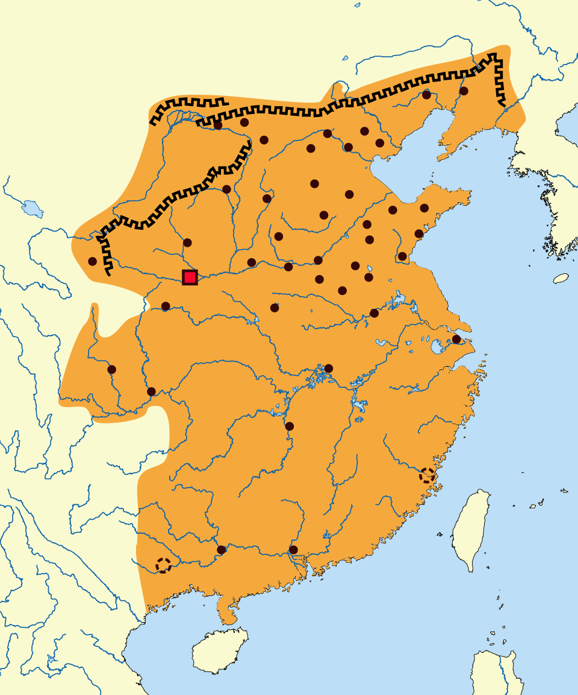

Territory
Qin's territory covered modern eastern/central China. Qin Shi Huang expanded south to Baiyue regions and built the Great Wall to defend against northern Xiongnu tribes.

Qin Dynasty territory and the Great Wall

Ancient section of the Great Wall built by Qin